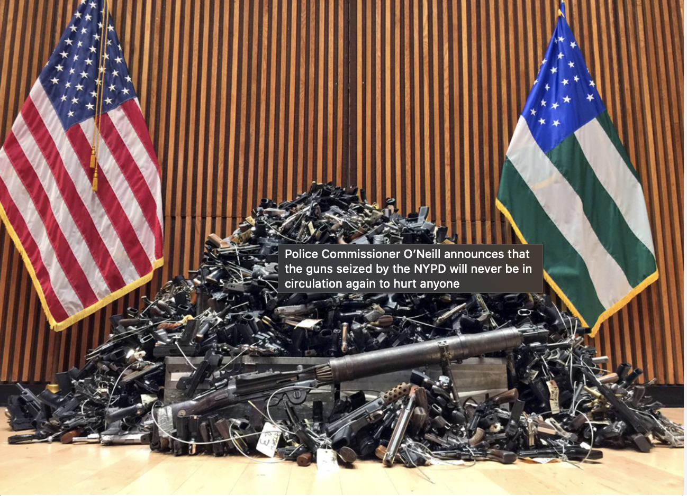

Shooting surge foils attempts to restore citywide crime rates to pre-pandemic levels
Mayor Bill de Blasio touted “significant” reductions in crime across most of the city, with the exception of the Bronx and a few other city regions, during a public address at City Hall Wednesday morning.
De Blasio announced murders and shootings are approaching pre-pandemic levels following a year-long, pandemic-driven spike in violent crime citywide. But according to NYPD Department Chief Rodney Harrison, who joined de Blasio at City Hall, shootings and illegal firearm discoveries remain a problem among half of all NYPD borough commands.
Although gun seizures have helped to curb gun violence in Gotham — where violent crime rates are lower than those of several large US cities — attaining the city’s goal of stamping out local violence will require New Yorkers to engage with NYPD officers and participate in neighborhood policing efforts, de Blasio says.
De Blasio says violent crime indicators in 75% of NYPD borough commands, or policing regions, are “at or near” pre-pandemic levels.
“We have eight borough commands…six of them have brought major crime indicators, most notably, shootings, back down to pre-pandemic levels. In Brooklyn, especially, there’s a 20% reduction [in shootings].”
Still, the number of shootings outside of Brooklyn increased significantly from 2020 to 2021 in four out of the NYPD’s eight borough commands, including Queens South (4.8%), Manhattan South (18.5%), Manhattan North (27%) and the Bronx (31.4%).
Gun violence rates for the entire city, however, are still down from last spring, when shootings were up 166% from the previous year.
The city’s effort to combat shootings and other violent crimes is a point of pride for DeBlasio, who reminded his audience that other U.S. cities remain in dire straits.
“Strikingly important in [October], compared to a year ago, murder is down almost 10%," said de Blasio. “Contrast that to what we’re seeing nationwide...murder is going up substantiatially nationwide. Major cities across the USA — Chicago, Los Angeles, Houston, Philadelphia — are struggling.”
De Blasio attributed declining murder rates to NYPD gun arrests. In October, 400 guns were removed from the streets, bringing the total number of gun seizures to 4,000 for the year to date.
There are, however, two city regions where shooters still strike often.
“We have to keep our attention on The Bronx,” said de Blasio. “Lots of resources are being poured into addressing [gun violence] there [and in] Manhattan North.”
The Bronx experienced a 75% increase in gun violence from pre-pandemic levels, compared to a 23% increase in gun-related incidents citywide. As a result, it has become the focal point of officers' efforts to tackle the city’s illegal firearm epidemic, Harrison says.
“The Bronx is still struggling. It’s the only borough with over 1000 gun arrests year to date," said Harrison. “That's an increase of 22% from last year.”
Whether those numbers improve, de Blasio says, is a matter of communities’ willingness to work in tandem with the NYPD.
“We’ve got to get the public more involved,” said de Blasio. “Safety derives not just from the presence of trained police officers, but from the community. We need people to join Build a Block meetings and get involved.”